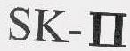

Do I Need Trade Mark Registration?
If you provide goods and services, then the benefits of trade mark registration include
- Exclusive rights - you can stop and prevent unauthorised use of a trade mark (e.g. copycats). Without registration, you can only stop and prevent unauthorised use if your reputation has been established in the trade mark.
- Nationwide protection - registration gives protection to your trade mark across Australia. Without registration, your rights are generally limited to the areas in which you can prove a reputation.
- Valuable asset - a registered trade mark is a valuable asset which can be licensed or sold.
- Cost effective enforcement - once registered, reputation in the trade mark does not have to be established in order to obtain relief from infringement. Proving reputation can often be a difficult and costly exercise.
You Might Not Know
- Business name, company name or domain name does not give you proprietary rights to use that name as a trade mark.
- Registration of a trade mark is less expensive than you may think. (Please contact Yike for a quote)
- You can use the trade mark before being granted official registration and even before filing the application. There is no need to wait.
What Can Be A Trade Mark?
Trade marks are used to distinguish goods and services and come in different types including
- words
- names
- numbers
- logos
- pictures
- aspects of packaging
- shapes
- colours
- scents
- sounds
- combinations of the above
Registration In Australia
In Australia, the registration process includes
- Trade mark search
- Preparation and lodgement of applications
- Examination
- Application acceptance
- Advertisement for opposition
- Trade mark registration
The detailed registration process including typical steps (green with unbroken lines) is shown below

Trade Mark Search
Although a trade mark search is not mandatory for registration purposes, it is crucial to reducing your risks and legal costs. A search should be conducted before using your trade mark for marketing and labelling your goods and services.
A trade mark clearance search will
- disclose whether your trade mark is available for registration
- identify whether your trade mark will infringe the rights of other traders
- minimise objections being raised during the registration process
- minimise the risk of a trade mark dispute arising later
Yike provides these searches
- basic search – preliminary database search for identical registered and pending marks for all classes of goods and services
- standard search – in-depth database search for identical and similar registered and pending trade marks for all classes of goods and services
- comprehensive database search – full database search for identical and similar registered and pending trade marks, and search for unregistered (common law) trade marks.
A report will be provided for each type of search with advice on class identification of your trade mark based on the description of the goods and services provided, the registrability of a proposed trade mark, and the risks associated with adopting a proposed mark.
Sample search reports are available on request.
Preparation And Lodgement Of Applications
There are important decisions you have to make when preparing an application. These decisions will determine the boundaries of your trade mark’s protection and include determination of
- the identity of the applicant;
- the critical elements of your branding. These may include the name of your business or company; the names of your goods and services; or distinctive elements of your packaging;
- appropriate descriptions of the goods and services you actually trade in or intend to trade in the near future; and
- the class or classes to be included in the registration.
Yike will work with you to ensure that the most appropriate part of your brand is trade marked.
Please note:
- Business and trading names cannot own property; therefore, an application should be in the name(s) of the owner(s) of the business name registration or company (if the business is an incorporated entity).
- Once your application is filed and published, you cannot add any goods or services.
Basic Filing Requirements
In Australia, no power of attorney or authorisation of agent form is required. The following basic information is required to file a trade mark application in Australia.
- the applicant’s full name and address including incorporation details if the applicant is an Australian company
- a clear representation of the trade mark if it contains a device
- the class(es) in which the application is to be filed
- a statement of goods and/or services for which registration is to be sought
- details of convention priority claim (if any)
- an address for service in Australia (if overseas applicant)
Examination
Your trade mark application will generally be examined three to four months after filing.
If the examiner decides:
- your application meets all the requirements, your trade mark will be accepted for registration; or
- your application does not meet all the requirements, an adverse report will be issued.
Some of the most common grounds outlined in an adverse report for rejection are:
- your trade mark does not distinguish your goods and/or services
- your trade mark contains words or phrases that other traders are likely to use
- your trade mark is identical or substantially similar to another trade mark
You will have 15 months from the time the adverse report issued for you to address their concerns.
If an adverse report is issued, Yike can help you with
- analysing the grounds for rejection outlined in the adverse report and advising on the options in overcoming them
- collecting evidence and providing guidance for you to collect evidence to support your response (if necessary)
- drafting a response to the adverse report
- drafting a statutory declaration with supporting evidence to respond to the adverse report (if necessary)
If your application has been rejected after filing the evidence, you can choose to have the matter heard before a registrar. Should such needs arise, Yike can represent you during the hearing.
Application Acceptance
Once an application has been accepted, a Notice of Advertisement of the Acceptance of the trade mark will be sent to the applicant.
Advertisement For Opposition
A trademark opposition is a proceeding in which a third party can object to an application under the Trade Marks Act 1995 (including an application to register a trade mark).
An opposition can be filed with IP Australia within three months of the advertised date.
Please see below for more information regarding the opposition process.
Trade Mark Registration
If no opposition is filed against your application, or if opposition is unsuccessful, your trade mark will be registered upon payment of the registration fee. Your trade mark will be registered from the date you file your application. The initial period of registration of your trade mark lasts for ten years from the filing date.
Opposition
Things don't always go according to plan. Your trade mark application may be opposed. If this occurs, then you will have to gather evidence to strengthen your application.
On the other hand, you may want to oppose a trade mark application.
In accordance with the Trade Marks Act 1995, anyone can file an opposition to applications for
- a trade mark advertised as accepted
- a removal because of non-use
- an extension of more than three months
- an amendment to a trade mark application
Opposing A Trade Mark Application Advertised As Accepted
Common reasons include
- the trade mark is not distinctive
- the trade mark is identical or deceptively similar to another registered or pending trade mark
- the trade mark applicant is not the true owner of the trade mark
- the use of the trade mark is likely to cause deception or confusion because of the reputation in another mark
A typical process of opposition to registration of a trade mark includes
- Notice of Opposition – A notice of Opposition needs to be filed within three months of the application being advertised as accepted in the Australian Official Journal of Trade Marks. A single extension of time of up to three months may be granted by the registrar under certain very limited conditions. A copy of the notice of opposition must be served on the applicant.
- Evidentiary stages – All evidence that each party provides must be in the form of statutory declarations and the original copy must be filed with IP Australia. No extra evidence will be admitted to the hearing except under very special circumstances that introduction of new evidence will be allowed. The evidentiary stages include
- evidence in support of the opposition (which must be served on the applicant within three months since the lodgement of the notice of opposition);
- evidence in answer to the opposition (which must be served on the opponent within three months since the date on which the applicant was served); and
- evidence in reply to the evidence in answer (which must be served on the applicant within three months of the date on which the applicant had served its evidence in answer).
- Determining the matter – opposition matters will be determined either at a hearing or based on the written record. A hearing will be scheduled to decide opposition matters if either or both parties request. As a rule, no decision will be made by the Hearing Officer on the hearing day. A written decision will be sent to both parties.
- Appeal – Either party may appeal the decision to the Federal Court.
The opposition process can be lengthy, complex and costly, and IP Australia recommends involved parties (either filing or defending) to seek the assistance of an IP Professional.
With years of litigation experience, Yike can help you either oppose or defend the registration of a trade mark by
- analysing the opposition matter and advising on the options
- collecting evidence and providing guidance for you to collect evidence to support your case
- drafting a statutory declaration with supporting evidence
- drafting confidentiality agreements (if confidential information needs to be disclosed in the evidence)
- negotiating with the other party
- preparing settlement agreements
- representing you at hearings
The above-mentioned opposition procedure is also generally applicable to other oppositions filed with IP Australia in accordance with the Trade Marks Act 1995.
Opposing a trade mark removal for non-use
Common reasons for applying to remove a trade mark for non-use
- the owner of a trade mark has not used the trade mark;
- the owner of a trade mark has not used it in good faith; or
- the owner did not ever have any intention to use the trade mark.
A successful opposition has to prove that the trade mark has been properly used within the relevant time period set by the Trade Marks Act 1995.
Opposing an extension of over three months
Common reasons include
- sufficient time has already been allowed
- time sought is excessive
- a party would be adversely affected if the extension was granted
Opposing an amendment to a trade mark application
A person may oppose an application to amend a trade mark application based on the claim that such amendment would adversely affect their rights.
Infringement
Has a trade mark attorney contacted you about infringement of their client's trade mark?
Do you need a trade mark attorney to help you deal with a potential case of infringement of your trade mark?
Yike can help you by
- providing legal advice
- handling pre-litigation negotiation
- developing risk management strategies
- representing you at opposition proceedings before IP Australia
Licensing
Has a company contacted you about using your trade mark to promote their goods and services?
Yike can help you with
- advice on licensing and assigning trademarks
- drafting and negotiating a license and/or assignment agreement
- reviewing licensing and/or assignment agreement
Protection In China
If you are exporting or planning to export to China, be aware that in China
- there is a first-to-file rule, i.e. the first person to file an application to register a trade mark will have priority over the first person to use that trade mark
- a power of attorney is required for trade mark application
- protection will not start until the date of registration
- you may need to register a Chinese version of your trade mark. A Chinese company may create a Chinese version of an English brand and that Chinese version might become more well-known than the original English version
Yike can help you with your Chinese trade mark protection including guidance, translations and referrals to assist with registration and anti-counterfeiting.
Why Yike?
- Before coming to Australia, Yike practiced law as a fully qualified and registered lawyer in China working for a reputable legal firm. This included handling trade mark matters in China for many clients (including Chevron and Bossini).
- Yike has a thorough understanding of both Australian and Chinese trade mark systems
- Yike maintains good links with reputable IP law firms and trade mark lawyers in China
Classification of goods and services
Although China has adopted the Nice Classification of Goods and Services (“Nice Classification”) (10th Edition, as of 1 January 2012) in the examination of trade mark applications, the Chinese Trade Marks Office (“CTMO”) has created its own unique “Book of Classification of Similar Goods and Services” (“Book of Classification”) for Chinese examiners’ reference. In accordance with the Book of Classification, each class as per the Nice Classification has been sub-classified into sub-classes. Goods that belong to different subclasses (even in the same class) are not deemed as similar and/or closely related goods for examination purposes. For example, clothing under subclass 2501 is not deemed similar to footwear under subclass 2507 or headgear under subclass 2508. Hence, identical or substantially similar marks covering goods in different subclasses can coexist in the register.s
It is strongly recommended that applicants refer to the Book of Classification when specifying the goods covered by the trade mark to ensure adequate protection of the mark. For example, class 25 “clothing, footwear and headgear” as per the Nice Classification has been sub-classified into 13 subclasses as follows:
- clothing (2501)
- textiles for babies (2502)
- specialty sports apparel (2503)
- waterproof clothing(2504)
- costumes (2506)
- shoes for special purpose (2506)
- shoes (2507)
- hats (2508)
- socks (2509)
- gloves (2510)
- ties, scarfs, mantillas and veils (2511)
- girdles and belts (clothing) (2512)
- single product (2513)
For each subclass, there are various descriptions of goods. These descriptions are used to specify goods in an application. Class or sub-class headings cannot be used to describe goods, unless the words coincide with words used in the various descriptions of goods.
A common mistake in respect of the scope of coverage of specifications is that some specifications are not as broad as they sound for registration purposes. For example, “clothing” sounds generic and applicants may believe it covers all the goods under class 25. However this is not true according to the Book of Classification. Clothing only covers goods specified in class 2501, goods such as raincoats, gloves and socks are considered different goods. Therefore, if one registers a trade mark for clothing, that mark cannot prevent other applicants registering exactly the same mark for goods such as raincoats and gloves.
The basic government fee of RMB1,000 (approximately AUD$17) allows specification of up to 10 items of goods and/or services in each application. It is recommended that at least one item from each sub-class should be included in the application.
Substantially Similar Marks
Examples of substantially similar marks as determined by the Chinese Trade Marks Office CTMO include
